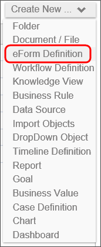
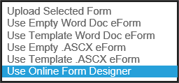
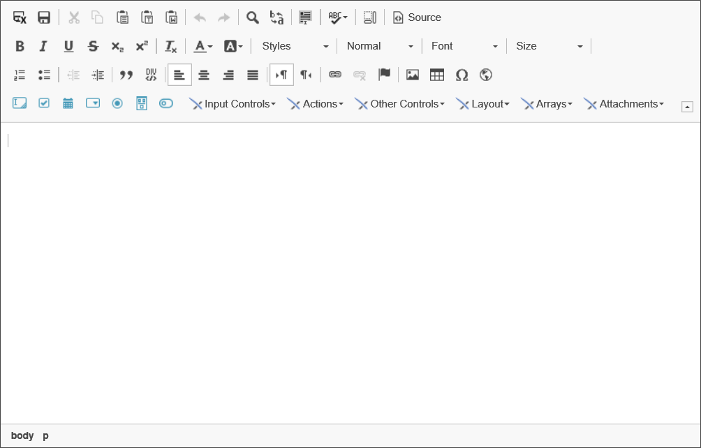
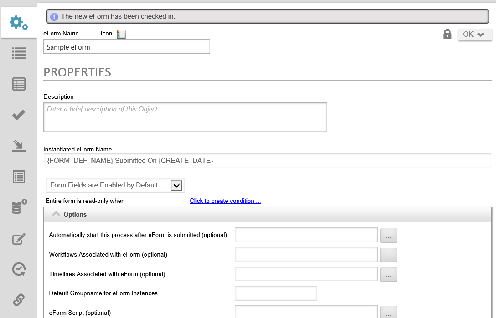

|
|
Lesson Contents | In this Lesson, you will learn the basic concepts related to Form definitions. |
Forms are electronic forms that serve as the container for the data that is used in your process. Forms can enable users to input information, present information collected from other sources, control what users participate in the process, and much more. Each Form consists of a number of Process Director controls.
A control is a user interface object, like a button or text box, that enables you to interact with a Form. Controls are central to the operation of the Form, because controls enable users to enter or edit information. Many controls, such as text input fields or check boxes, may already be familiar to you.
To create a new Form definition, use the Create New dropdown in the Content List and choose the Form Definition menu item. A user must have Modify permission to the parent folder to create a Form definition. If a user does not have the appropriate permission, the hotlink will not appear.

The Create Form dialog box will display. In the dialog box, there is a dropdown control with the Use Online Form Designer option already selected. Click on this dropdown control to display the full list of options.

The options displayed in the dropdown control enable you to choose the type of Form template that will be created with the Form definition.
| Option | Description |
|---|---|
| Upload Selected Form | This option will allow you to choose a Form template that you've already created. You can choose an existing word document template or a .NET form in ASPX format. |
| Use Empty Word Doc Form | This option will create a blank Word document template that you can then design manually. This requires the Word Form Builder Plug-in and other technical requirements. |
| Use Template Word Doc Form | There is an existing Word template in Process Director that contains some basic fields and instructional text. You may choose this form to use for training, or as a basis for a new production form. |
| Use Empty .ASCX Form | This option will create a blank ASP.NET web form that uses C# as the CodeBehind programming language. This form must be edited in a C# programming IDE, like Visual Studio 2013. The ".ASCX" designation refers to the file extension for ASP.NET web forms. This option is primarily for programmers, not regular implementers. |
| Use Template .ASCX form | There is an existing ASP.NET web form template in Process Director that contains some basic fields and instructional text. You may choose this form to use for training, or as a basis for a new production form. This option is primarily for programmers, not regular implementers. |
| Use Online Form Designer | The Online Form Designer is the built-in form design tool for Process Director. This is the default option for new Forms, and enables you to create form templates using only your browser. No additional software or plugins are required for this option. |
Ensure that the Use Online Form Designer option is selected, then enter the required name for the form and optionally give it a description. Click the OK button to create the Form definition. The Form will automatically open in edit mode to display the Online Form Designer.

We don't want to address the functions available on this screen yet, so click on the Save and Close form tool button to go to the Form properties screen.
The Form template will save and close and you will be taken directly to the properties tab of the Form definition. At the top of the screen, a banner message will be displayed telling you that the Form Template has been checked in automatically.

The Form Definition's Properties tab allows the default behavior of the form to be changed. The options include the ability to change default styles and how to handle validation errors. Associating processes with Forms allows the Form to reference steps and other information in that process. The Default Styles section controls the stylized borders and colors around Form controls depending on the controls’ statuses (enabled, required, disabled, or error).
The following properties are configurable from the Properties tab.
The Instantiated Form Name field determines the name of each Form instance. One should usually use System Variables here so that the Form’s instance’s name is relevant to the specific instance.
You have the option to determine the default setting for whether form fields are enabled or disabled, using this dropdown control. The control offers four settings:
These form level-settings can be overridden in the properties for individual controls. For example, if you select "Form Fields are disabled by default", but set an individual control to be enabled, the control setting will override the Form option setting you choose here. The general rule to remember when setting an enable or visibility option is that the setting at the lowest level always wins.
Form definitions can be configured as "read-only". Selecting this option enables you to define a condition or set of conditions that, when true, will cause the form will act as though the user does not have modify permission on the form (whether or not that would otherwise be the case). An open form in "read-only" state will not trigger form locking. Unlike the option to enable form fields, this option overrides any "enabled" settings at the control level. A read-only form cannot be edited, irrespective of the enabled/disabled settings that might be set elsewhere.
The primary method for starting a process in Process Director is to call the process from a Form when the Form is submitted. This option defines the process that will be started, and the picker control allows you to choose either a Workflow or Process Timeline. Once you have selected the process you desire, then every time a new instance of the Form is submitted, the selected process will start, and the Form and its data will be attached to that process.
You have the ability to associate multiple Workflows or Process Timelines to Form, so that data can be passed between those associated processes and the Form. The process you choose in the "Automatically start this process…" option will also be automatically associated here.
You can set a custom Group Name for each instance of the Form. This enables you to group Forms by department, process type, etc. When a process is started that automatically adds a Form, it will use the Default Groupname configured on the form definition.
You may associate a custom script with a Form to perform specialized, programmatic functions.
For Case Management applications, this option enables you to select the Case Definition for which a new instance will be created when the Form is submitted. When a Case definition is selected, the Form will not only create the Case instance, but will also set some or all of the Case properties from controls on the Form.
The default method of displaying validation errors on a Form is to display a text message at the top of the Form. Selecting this option also causes the validation error to appear in an alert dialog box.
Selecting this option removes the Form from the Items I can Run Knowledge View that usually appears on the home page of a workspace.
The default programming language for scripts in Process Director is the C# language. Selecting this option enables the use of Visual Basic as a scripting language for this Form.
Users of Cloud Installations or on-premise installations with the Compliance Option have the ability to maintain a record of every change made to Form fields during the process. Selecting this option enables the field-level auditing for the Form.
Form locking prevents other users from making changes to a Form instance once a user opens it. This prevents multiple users from overwriting each other's changes. Selecting this option enables form locking.
This option tells Process Director to remove a new form instance from an existing case instance during submission if it is already in a case instance. (For instance, when a new Form instance is created from inside an existing case folder, the default behavior is to add the new Form to that case folder.) Checking this option changes the default behavior so that the new form Instance is automatically transferred to a new case instance. This allows the new form to be displayed with the case properties from the existing case instance, but when the form instance is submitted, it will only set properties in the new case instance that is created, without altering the properties of the existing case instance.
Selecting this option will display a warning before closing the Form when users cancel their changes.
Selecting this option will display only the text in disabled fields, rather than displaying the actual control. The value in the control will be output to the Form as simple text, as if the control did not exist.
 BP Logix recommends that you use this setting.
BP Logix recommends that you use this setting.
In a Form contains multiple validation errors (i.e., field values that do not meet the criteria for acceptable data), only the first validation error will be shown when the validation fails if this option is checked.
Selecting this option will keep disabled buttons from appearing on the Form when it is displayed.
This section enables you to quickly change the default styling of various fields on the Form. For each field, you can choose a default style from the dropdown, or type in any desired CSS styles manually.